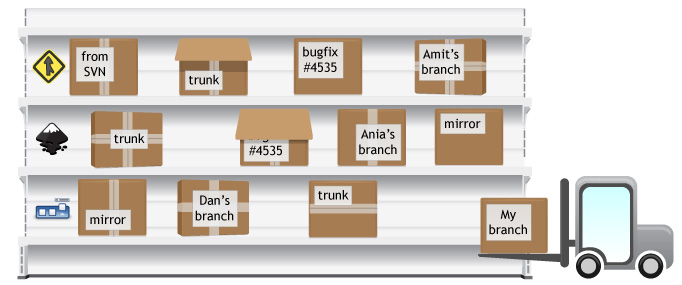

3 of 11
Welcome to the Bazaar

You want to ensure that anybody who is interested can contribute code to your project, in a simple way, with full version control. And of course, you also want to maintain strict control of the people who can actually land code in your development trunk. Launchpad, together with Bazaar, give you infinite hosting for contributions while still preserving tight control over your core codebase.
Launchpad and Bazaar democratise your project’s development. Anyone can create their own line of development, with full version control, to be published alongside your official branches. From experimental lines of development by entirely new contributors, to work on the the next major release, all code related to your project is catalogued and can be downloaded with just a few key strokes. Teams can collaborate on branches, merging easily between them. To find out more about a branch, browse its commit messages or any revision of its code.
Code doesn’t even have to be hosted directly on Launchpad, or in Bazaar. Mirror or monitor Bazaar branches hosted anywhere on the web or ask Launchpad to run a continuous import of Subversion and CVS repositories into a Bazaar branch.
Drive-by contributions
Some people have great ideas for your project but don’t have time to get fully involved.

With Launchpad and Bazaar, they can create their own branch of your code, make their changes and then push it all back up to Launchpad to be listed right alongside your official branches. They don’t need to ask for commit access and your mainline remains untouched until you’re confident enough in the code to merge it in.
Merge flows
Once a contributor is happy with their branch, they can propose it to be merged into your main line of development, or any other branch registered for your project.

Each merge proposal has its own status whiteboard, allowing you to communicate with the branch’s owner. Thanks to Bazaar’s superb support for merging, bringing the new code and its revision history back into your branch is quick and easy.
Links between bugs and branches
Working on a fix for a bug tracked in Launchpad?
Develop your fix in a branch, and link it to the bug report. Anyone interested in the bug can track your progress and get access to your fix with a single command.